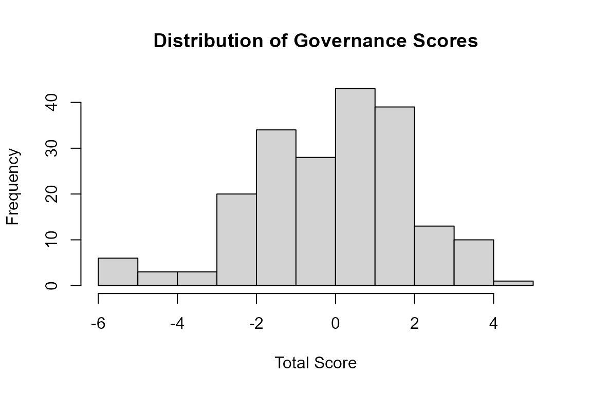

The governance package turns raw IRS Form 990 governance and management fields into a multi-dimensional governance index for benchmarking nonprofits. The workflow is two steps: normalize the raw fields into a binary feature matrix with get_features(), then score them against a pre-fit factor model with get_scores().
Step 1: Get input data
get_features() expects a data frame of raw 990 efile fields — the governance, management, and disclosure questions from Part IV, Part VI, Part XII, and Schedule M. See vignette("download-data") for the exact fields and where they come from. Retrieval and management of the efile tables is handled by the companion panel990 package (in development); until then you can pull the tables directly from the NCCS efile v2.1 archive.
The package ships a ready-to-use example: a 5,000-organization sample of raw 2022 fields.
Step 2: Build the feature matrix
get_features() normalizes the raw fields (yes/no, "X" flags, member counts) into 12 binary governance features, appended to the input.
features_example <- get_features(dat_example)
features_example %>%
select(ORG_EIN, P6_LINE_1, P6_LINE_12_13_14, P12_LINE_1) %>%
head()
#> ORG_EIN P6_LINE_1 P6_LINE_12_13_14 P12_LINE_1
#> 849 521314461 1 1 1
#> 2532 832563658 1 0 1
#> 2699 870470748 0 1 1
#> 2478 752538361 1 0 0
#> 531 650144766 1 0 1
#> 3673 883636365 0 0 0Step 3: Calculate the scores
get_scores() applies the pre-fit factor model and appends six factor scores plus a total.score.
scores_example <- get_scores(features_example)
scores_example %>%
select(ORG_EIN, total.score) %>%
head()
#> ORG_EIN total.score
#> 849 521314461 1.84480679
#> 2532 832563658 1.41783202
#> 2699 870470748 -0.08681385
#> 2478 752538361 -0.27424699
#> 531 650144766 0.60652413
#> 3673 883636365 -5.00061728
hist(scores_example$total.score,
main = "Distribution of Governance Scores",
xlab = "Total Score")
See vignette("governance-workflow") for a fuller walk-through and vignette("making-gov-scores") for the methodology behind the index.